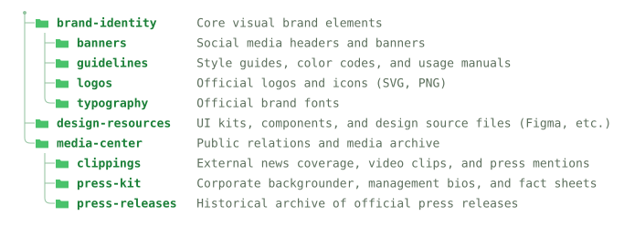

treegen2
A GitHub Action that turns a [[files]] marker in your
README into a directory tree — and keeps it in sync on every push.
Una GitHub Action que convierte un marcador [[files]] en tu
README en un árbol de directorios — y lo mantiene sincronizado en cada push.
Una GitHub Action che trasforma un marcatore [[files]] nel tuo
README in un albero di directory — mantenendolo sincronizzato a ogni push.
Stop hand-editing your file treeDeja de editar tu árbol de archivos a manoSmetti di modificare a mano il tuo albero dei file
A directory tree in a README goes stale the moment someone adds a folder. treegen2 keeps one marker current, forever. Un árbol de directorios en un README queda desactualizado en cuanto alguien agrega una carpeta. treegen2 mantiene un marcador siempre actualizado. Un albero di directory in un README diventa obsoleto non appena qualcuno aggiunge una cartella. treegen2 mantiene un marcatore sempre aggiornato.
| ManuallyManualmenteManualmente | treegen2recommendedrecomendadoconsigliato | |
|---|---|---|
| Tree stays in sync on every pushEl árbol se mantiene sincronizado en cada pushL'albero resta sincronizzato a ogni push | ✕ | ✓ |
| No hand-retyping after restructuresSin reescritura manual tras reestructuracionesNiente riscrittura manuale dopo le ristrutturazioni | ✕ | ✓ |
| Consistent alignment, no copy-paste driftAlineación consistente, sin desvíos de copiar y pegarAllineamento coerente, senza derive da copia-incolla | ✕ | ✓ |
| Theme-aware light & dark outputSalida clara y oscura según el temaOutput chiaro e scuro in base al tema | ✕ | ✓ |
check mode fails CI when docs go staleEl modo check falla en CI cuando la documentación queda desactualizadaLa modalità check fa fallire la CI quando la documentazione diventa obsoleta | ✕ | ✓ |
Watch the marker become a treeMira cómo el marcador se convierte en un árbolGuarda il marcatore trasformarsi in un albero
This is the actual splice-and-commit loop, animated — scroll it into view once, then hit replay as often as you like. Este es el ciclo real de empalme y commit, animado — desplázate hasta que aparezca una vez y luego presiona repetir tantas veces como quieras. Questo è il vero ciclo di splice e commit, animato — scorri fino a farlo comparire una volta, poi premi replay tutte le volte che vuoi.
## Project structure
[[files]]Pick your styleElige tu estiloScegli il tuo stile
Every tree below is generated by the action from the same
examples/brand
folder — including this page. Set a default in your workflow, or override
per-marker with style="…".
Cada árbol de abajo es generado por la action desde la misma carpeta
examples/brand
— incluyendo esta página. Define un valor predeterminado en tu workflow, o anúlalo
por marcador con style="…".
Ogni albero qui sotto è generato dall'action a partire dalla stessa cartella
examples/brand
— inclusa questa pagina. Imposta un valore predefinito nel tuo workflow, oppure
sovrascrivilo per singolo marcatore con style="…".
tree block, with aligned descriptionsBloque tree clásico, con descripciones alineadasBlocco tree classico, con descrizioni allineate
├── brand-identity/ # Core visual brand elements │ ├── banners/ # Social media headers and banners │ ├── guidelines/ # Style guides, color codes, and usage manuals │ ├── logos/ # Official logos and icons (SVG, PNG) │ └── typography/ # Official brand fonts ├── design-resources/ # UI kits, components, and design source files (Figma, etc.) └── media-center/ # Public relations and media archive ├── clippings/ # External news coverage, video clips, and press mentions ├── press-kit/ # Corporate backgrounder, management bios, and fact sheets └── press-releases/ # Historical archive of official press releases

<details> — click a folder to expand/collapseElemento <details> nativo de GitHub — haz clic en una carpeta para expandir o contraerElemento <details> nativo di GitHub — clicca su una cartella per espandere o comprimere
📁 brand-identity Core visual brand elements
📁 banners Social media headers and banners
- 📄 twitter-header.png
📁 guidelines Style guides, color codes, and usage manuals
- 📄 brand-guide.pdf
📁 logos Official logos and icons (SVG, PNG)
- 📄 favicon.png
- 📄 logo-mono.svg
- 📄 logo-primary.svg
📁 typography Official brand fonts
- 📄 Inter-Bold.ttf
- 📄 Inter.ttf
📁 design-resources UI kits, components, and design source files (Figma, etc.)
- 📄 components.fig
- 📄 ui-kit.fig
📁 media-center Public relations and media archive
📁 clippings External news coverage, video clips, and press mentions
- 📄 techcrunch-feature.md
📁 press-kit Corporate backgrounder, management bios, and fact sheets
- 📄 company-backgrounder.pdf
📁 press-releases Historical archive of official press releases
- 📄 2025-01-product-launch.md
- 📄 2025-06-series-a.md
Any repo with a folder worth explainingCualquier repo con una carpeta que valga la pena explicarQualsiasi repo con una cartella che vale la pena spiegare
Drag or scroll sideways — each card is the same one [[files]] marker, pointed at a different kind of repo.Arrastra o desplázate lateralmente — cada tarjeta usa el mismo marcador [[files]], apuntando a un tipo distinto de repo.Trascina o scorri lateralmente — ogni scheda usa lo stesso marcatore [[files]], puntato su un tipo diverso di repo.
How it worksCómo funcionaCome funziona
On each run the action does four things — all idempotent, so it's safe to run on every push.En cada ejecución, la action hace cuatro cosas — todas idempotentes, por lo que es seguro ejecutarla en cada push.A ogni esecuzione, l'action fa quattro cose — tutte idempotenti, quindi è sicuro eseguirla a ogni push.
ScanEscanearScansiona
Walks the directory into a tree, honouring .gitignore and your excludes.Recorre el directorio y arma un árbol, respetando .gitignore y tus exclusiones.Percorre la directory costruendo un albero, rispettando .gitignore e le tue esclusioni.
RenderRenderizarRenderizza
Draws it as ASCII, an SVG file, or nested <details> — with optional descriptions.Lo dibuja como ASCII, un archivo SVG, o <details> anidados — con descripciones opcionales.Lo disegna come ASCII, un file SVG, oppure <details> annidati — con descrizioni opzionali.
SpliceEmpalmarInnesta
Replaces the content between the filetree markers, leaving the rest of your file alone.Reemplaza el contenido entre los marcadores filetree, sin tocar el resto de tu archivo.Sostituisce il contenuto tra i marcatori filetree, lasciando intatto il resto del file.
Commit
Pushes the updated README (and SVG) back to the branch — or fails a PR in check mode.Envía el README actualizado (y el SVG) de vuelta a la rama — o hace fallar un PR en modo check.Invia il README aggiornato (e l'SVG) al branch — oppure fa fallire una PR in modalità check.
<svg> from Markdown,
so the action writes a real .svg and embeds it as an image. That file carries its own
light/dark palette via prefers-color-scheme and a viewBox,
so GitHub renders it theme-aware and responsive for free.
¿Por qué un archivo SVG? GitHub elimina el <svg> insertado en Markdown,
así que la action escribe un .svg real y lo incrusta como imagen. Ese archivo lleva su propia
paleta clara/oscura vía prefers-color-scheme y un viewBox,
así que GitHub lo renderiza adaptado al tema y responsivo, sin costo extra.
Perché un file SVG? GitHub rimuove l'<svg> incorporato nel Markdown,
quindi l'action scrive un .svg reale e lo incorpora come immagine. Quel file porta con sé la propria
palette chiara/scura tramite prefers-color-scheme e un viewBox,
così GitHub lo renderizza adattato al tema e responsive, gratis.
Quick startInicio rápidoAvvio rapido
1 — Drop a placeholder anywhere in your README.md:1 — Coloca un marcador en cualquier parte de tu README.md:1 — Inserisci un segnaposto in qualsiasi punto del tuo README.md:
## Project structure [[files]]
2 — Add a workflow at .github/workflows/update-tree.yml:2 — Agrega un workflow en .github/workflows/update-tree.yml:2 — Aggiungi un workflow in .github/workflows/update-tree.yml:
name: Update file tree
on:
push:
branches: [main]
permissions:
contents: write # so the action can push the updated README
jobs:
update:
runs-on: ubuntu-latest
steps:
- uses: actions/checkout@v4
- uses: lucianofedericopereira/treegen2@v1
with:
style: ascii # ascii | svg | collapsible
That's it. The [[files]] token becomes a managed block that stays in sync forever.
Override options on any single marker:
Eso es todo. El token [[files]] se convierte en un bloque gestionado que se mantiene sincronizado para siempre.
Puedes anular opciones en cualquier marcador individual:
Tutto qui. Il token [[files]] diventa un blocco gestito che resta sincronizzato per sempre.
Puoi sovrascrivere le opzioni su qualsiasi singolo marcatore:
[[files dir="src" style="svg" max-depth="3" dirs-only="true"]]
OptionsOpcionesOpzioni
The workflow sets defaults; any marker can override them inline. A few of the most useful:El workflow define valores predeterminados; cualquier marcador puede anularlos en línea. Algunos de los más útiles:Il workflow imposta i valori predefiniti; qualsiasi marcatore può sovrascriverli in linea. Alcuni tra i più utili:
| AttributeAtributoAttributo | ExampleEjemploEsempio | MeaningSignificadoSignificato |
|---|---|---|
dir | dir="src" | Directory to scan (relative to repo root).Directorio a escanear (relativo a la raíz del repo).Directory da scansionare (relativa alla radice del repo). |
style | style="svg" | ascii, svg, or collapsible.ascii, svg, o collapsible.ascii, svg, oppure collapsible. |
max-depth | max-depth="2" | Limit tree depth (0 = unlimited).Limita la profundidad del árbol (0 = sin límite).Limita la profondità dell'albero (0 = illimitata). |
dirs-only | dirs-only="true" | Directories only, hide files.Solo directorios, oculta los archivos.Solo directory, nasconde i file. |
exclude | exclude="dist,*.tmp" | Extra ignore patterns (.gitignore syntax).Patrones de exclusión adicionales (sintaxis de .gitignore).Pattern di esclusione aggiuntivi (sintassi .gitignore). |
descriptions | desc="tree.json" | JSON file of path → comment notes.Archivo JSON de notas ruta → comentario.File JSON di note percorso → commento. |
collapse | collapse="true" | Wrap the block in one top-level <details>.Envuelve el bloque en un <details> de nivel superior.Racchiude il blocco in un <details> di primo livello. |
Why treegen2Por qué treegen2Perché treegen2
Zero runtime depsCero dependencias en tiempo de ejecuciónZero dipendenze a runtime
Core Perl only — nothing to install, fast to run.Solo Perl núcleo — nada que instalar, rápido de ejecutar.Solo Perl core — niente da installare, veloce da eseguire.
Theme-matched SVGSVG adaptado al temaSVG adattato al tema
Folder icons and colours lifted from GitHub's Primer light & dark tokens.Iconos de carpeta y colores tomados de los tokens claros y oscuros de Primer, de GitHub.Icone delle cartelle e colori ripresi dai token chiari e scuri di Primer, di GitHub.
ResponsiveResponsivoResponsive
SVG ships a viewBox and scales to any width without distortion.El SVG incluye un viewBox y se adapta a cualquier ancho sin distorsión.L'SVG include un viewBox e si adatta a qualsiasi larghezza senza distorsioni.
IdempotentIdempotenteIdempotente
Re-runs cleanly; a check mode fails PRs when docs go stale.Se puede volver a ejecutar sin problemas; el modo check hace fallar los PR cuando la documentación queda desactualizada.Può essere rieseguito senza problemi; la modalità check fa fallire le PR quando la documentazione diventa obsoleta.
Fence-safeSeguro con bloques de códigoSicuro con i blocchi di codice
Markers inside code blocks or `inline code` are left untouched.Los marcadores dentro de bloques de código o `código en línea` quedan intactos.I marcatori all'interno di blocchi di codice o `codice inline` restano intatti.
Built to lastHecho para durarFatto per durare
No syntax newer than Perl 5.8 — CI runs the identical suite on Perl 5.8 through today, unmodified.Sin sintaxis más nueva que Perl 5.8 — la CI ejecuta la misma suite en Perl 5.8 hasta hoy, sin modificaciones.Nessuna sintassi più recente di Perl 5.8 — la CI esegue la stessa suite da Perl 5.8 a oggi, senza modifiche.
FAQPreguntas frecuentesDomande frequenti
The short answers — every one of these is just the mechanics above, restated.Las respuestas breves — cada una de estas es simplemente la mecánica de arriba, explicada de nuevo.Le risposte brevi — ognuna di queste è semplicemente la meccanica descritta sopra, ripetuta.
Nothing. treegen2 only replaces the content between the [[files]] marker's start/end comments — everything else in the file is left exactly as it was.Nada. treegen2 solo reemplaza el contenido entre los comentarios de inicio/fin del marcador [[files]] — todo lo demás en el archivo queda exactamente igual.Niente. treegen2 sostituisce solo il contenuto tra i commenti di inizio/fine del marcatore [[files]] — tutto il resto del file resta esattamente com'era.
No — fence-safe scanning skips markers inside code fences or `inline code`, so documentation about the marker syntax won't get rewritten.No — el escaneo seguro con bloques de código omite los marcadores dentro de fences de código o `código en línea`, así que la documentación sobre la sintaxis del marcador no se reescribirá.No — la scansione sicura con i blocchi di codice ignora i marcatori all'interno di fence di codice o `codice inline`, quindi la documentazione sulla sintassi del marcatore non verrà riscritta.
The action is idempotent — re-running it on an unchanged tree produces identical output, so there's no commit noise.La action es idempotente — volver a ejecutarla sobre un árbol sin cambios produce el mismo resultado, así que no genera ruido de commits.L'action è idempotente — rieseguirla su un albero invariato produce lo stesso output, quindi non genera rumore di commit.
Yes — set check mode and the action exits non-zero if the rendered tree doesn't match what's committed, so CI catches stale docs before merge.Sí — activa el modo check y la action termina con código distinto de cero si el árbol renderizado no coincide con lo confirmado, así CI detecta documentación desactualizada antes del merge.Sì — imposta la modalità check e l'action termina con codice diverso da zero se l'albero renderizzato non corrisponde a quanto committato, così la CI intercetta la documentazione obsoleta prima del merge.
GitHub strips inline <svg> from rendered Markdown, so treegen2 writes a real .svg file and embeds it as an image — which also means it gets prefers-color-scheme light/dark tokens and a scalable viewBox for free.GitHub elimina el <svg> en línea del Markdown renderizado, así que treegen2 escribe un archivo .svg real y lo incrusta como imagen — lo que además significa que obtiene tokens claros/oscuros de prefers-color-scheme y un viewBox escalable, sin costo extra.GitHub rimuove l'<svg> in linea dal Markdown renderizzato, quindi treegen2 scrive un file .svg reale e lo incorpora come immagine — il che significa anche che ottiene i token chiari/scuri di prefers-color-scheme e un viewBox scalabile, gratis.
Yes — each [[files ...]] marker carries its own attributes (dir, style, max-depth, etc.), so you can render different trees for different folders in the same README.Sí — cada marcador [[files ...]] lleva sus propios atributos (dir, style, max-depth, etc.), así que puedes renderizar árboles distintos para carpetas distintas en el mismo README.Sì — ogni marcatore [[files ...]] porta i propri attributi (dir, style, max-depth, ecc.), quindi puoi renderizzare alberi diversi per cartelle diverse nello stesso README.